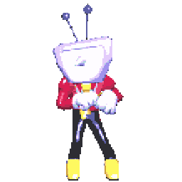

Oh no!
It seems that you are trying to access this option.Unfortunately, this section is under construction!
Click in the Ant Tenna to go back to HOME

Thank you for your understanding.

It seems that you are trying to access this option.Unfortunately, this section is under construction!
Click in the Ant Tenna to go back to HOME

Thank you for your understanding.